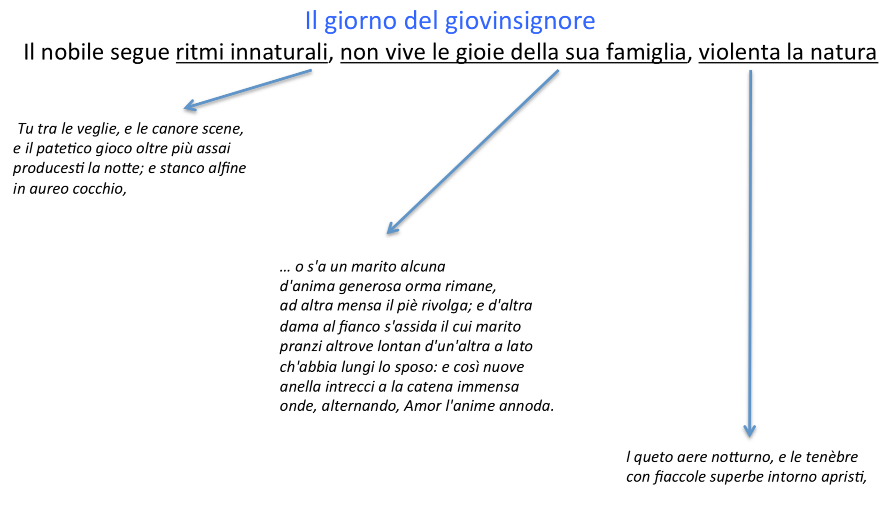
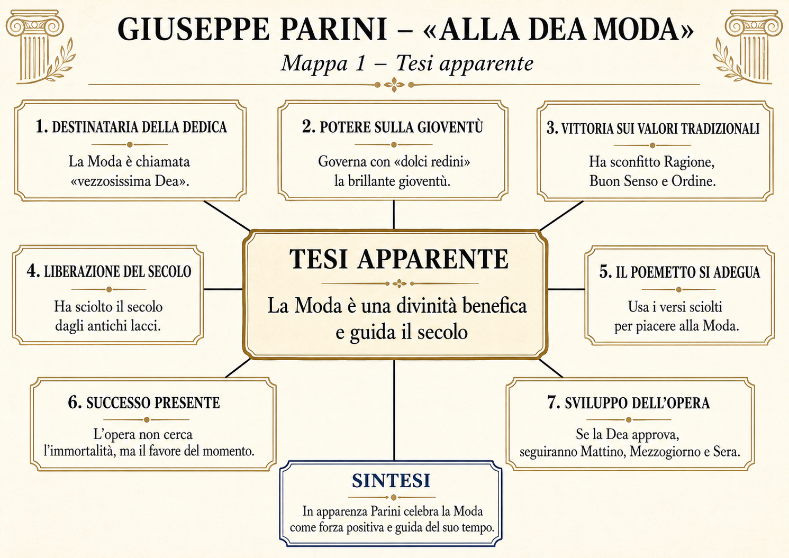
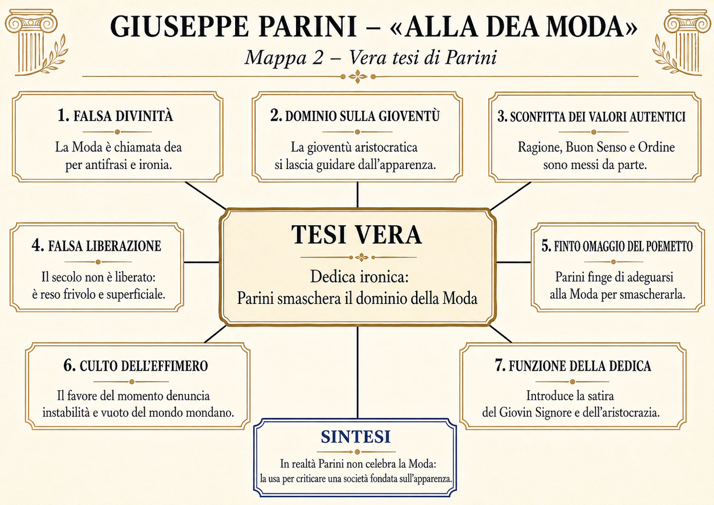
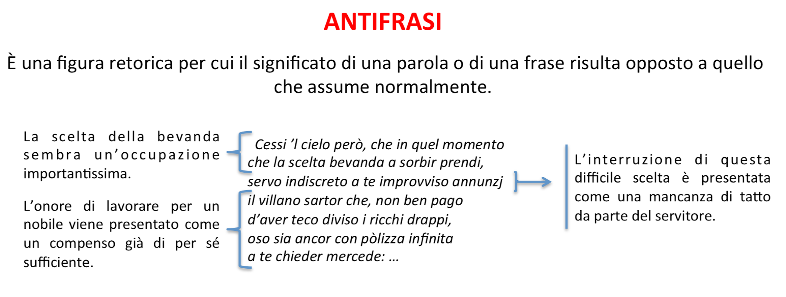
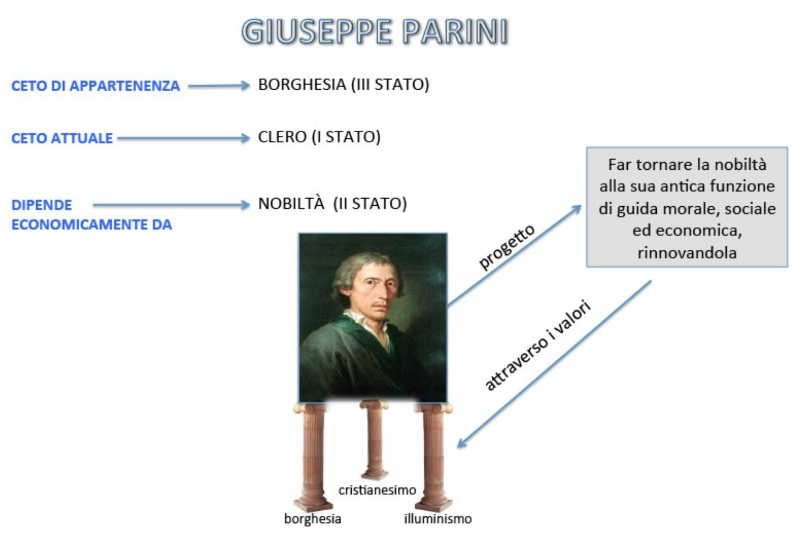
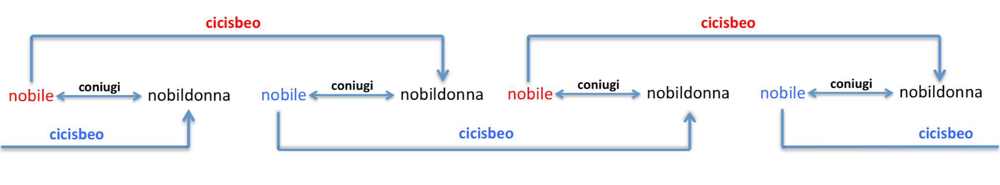
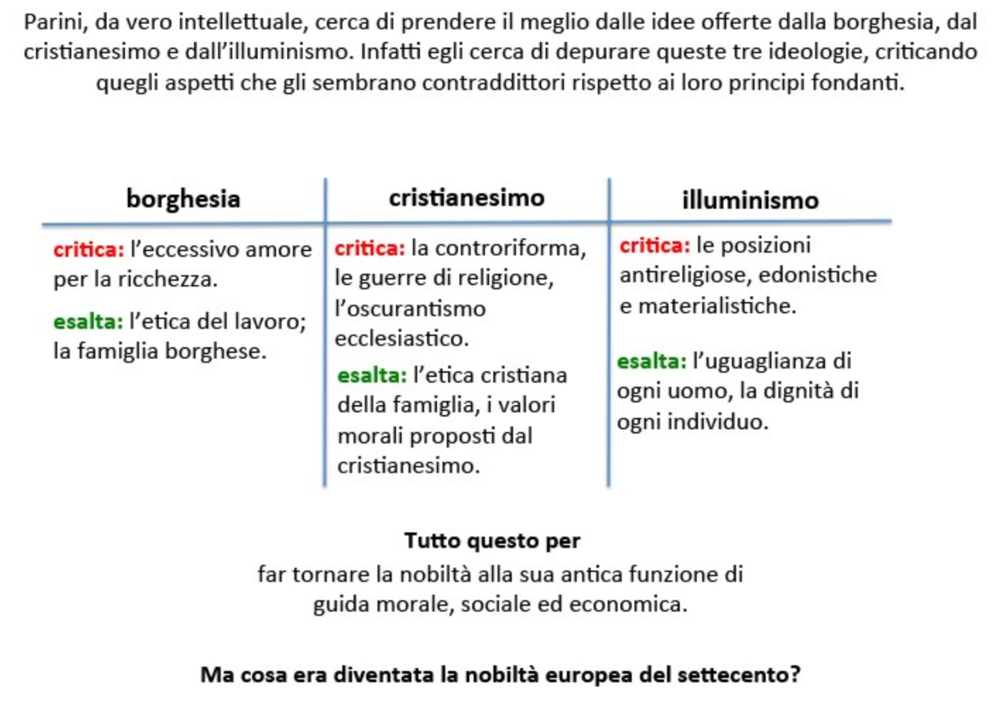

Borghesia
Valorizza lavoro, famiglia, utilità sociale. Parini ne assume l’etica dell’operosità, pur criticando l’attaccamento eccessivo alla ricchezza.
Letteratura · Storia · Cittadinanza
Una PWA per leggere Alla Moda non come brano antico, ma come dispositivo di smascheramento: chi orienta i desideri governa più di chi comanda.
La domanda di partenza
Parini dedica il suo poemetto alla Moda. In apparenza le rende omaggio. In realtà la mette sul trono per mostrarne il potere: una società può essere guidata non solo da leggi e sovrani, ma da modelli desiderabili.
Questa è la chiave della lezione: l’autorevolezza può perdere contro ciò che persuade subito. La Moda, ieri come oggi, non ordina: fa desiderare. Non obbliga: orienta. Non dice “devi”, ma “se vuoi contare, devi apparire così”.
Letteratura e società
Parini nasce nel Terzo Stato, appartiene al Primo Stato come sacerdote e dipende economicamente dal Secondo Stato come precettore presso famiglie aristocratiche. Questa posizione gli permette di osservare la società da dentro e da fuori.
Valorizza lavoro, famiglia, utilità sociale. Parini ne assume l’etica dell’operosità, pur criticando l’attaccamento eccessivo alla ricchezza.
Recupera dignità della persona, morale familiare, responsabilità verso i deboli. Rifiuta oscurantismo e degenerazioni storiche.
Accoglie ragione, uguaglianza, dignità individuale, ma non abbraccia l’antireligiosità estrema né l’edonismo superficiale.

Il testo
Lungi da queste carte i cisposi occhi già da un secolo rintuzzati, lungi i fluidi nasi de’ malinconici vegliardi. Qui non si tratta di gravi ministerj nella patria esercitati, non di severe leggi, non di annojante domestica economia, misero appannaggio della canuta età.
A te, vezzosissima Dea, che con sì dolci redini oggi temperi e governi la nostra brillante gioventù, a te sola questo piccolo Libretto si dedica, e si consagra.
Chi è che te, qual sommo Nume, oggimai non riverisca, ed onori, poiché in sì breve tempo se’ giunta a debellar la ghiacciata Ragione, il pedante Buon Senso e l’Ordine seccagginoso, tuoi capitali nemici, ed hai sciolto dagli antichissimi lacci questo secolo avventurato?
Piacciati adunque di accogliere sotto alla tua protezione, ché forse non n’è indegno, questo piccolo Poemetto. Tu il reca su i pacifici altari, ove le gentili Dame e gli amabili Garzoni sagrificano a se medesimi le mattutine ore.
Per esserti più caro egli ha scosso il giogo della servile rima, e se ne va libero in Versi Sciolti, sapendo che tu di questi specialmente ora godi, e ti compiaci.
Esso non aspira all’immortalità, come altri libri, troppo lusingati da’ loro Autori, che tu, repentinamente sopravvenendo, hai seppelliti nell’oblio. Siccome egli è per te nato, e consagrato a te sola, così fie pago di vivere quel solo momento, che tu ti mostri sotto un medesimo aspetto, e pensi a cangiarti, e risorgere in più graziose forme.
Se a te piacerà di riguardare con placid’occhio questo Mattino, forse gli succederanno il Mezzogiorno, e la Sera; e il loro Autore si studierà di comporli, ed ornarli in modo, che non men di questo abbiano ad esserti cari.
Parini finge di allontanare dal suo libro i vecchi seriosi, gli uomini legati agli incarichi pubblici, alle leggi, all’economia domestica e al senso del dovere. Il suo poemetto, almeno in apparenza, non vuole rivolgersi a loro.
Si rivolge invece alla Moda, chiamata ironicamente “vezzosissima Dea”. La Moda governa la brillante gioventù con redini dolci: non costringe con la violenza, ma guida attraverso il piacere, il gusto, l’apparenza e il desiderio di appartenere.
Parini finge di celebrarla perché ha sconfitto la Ragione, il Buon Senso e l’Ordine. Ma proprio questa celebrazione è la sua accusa: se la Moda trionfa, allora una società intera ha messo da parte i valori che dovrebbero renderla adulta.
Il poemetto stesso finge di adeguarsi alla Moda: usa i versi sciolti perché sono graditi al gusto del momento, non pretende l’immortalità e si accontenta di vivere finché la Moda non cambierà aspetto. La letteratura viene così trascinata ironicamente nel mondo dell’effimero.
La Moda è una divinità benefica: guida la gioventù, libera il secolo, decide il gusto, protegge il poemetto.
Parini non celebra la Moda: la usa come maschera ironica per smascherare una società fondata sull’apparenza.
Redini dolci: il potere più efficace non sembra costrizione, ma desiderio.
Chi decide oggi che cosa dobbiamo desiderare per sentirci riconosciuti?
Lettura sovrapposta
Le due mappe hanno la stessa struttura: prima si segue la tesi apparente, poi si ribalta ogni nodo e si arriva alla vera tesi di Parini.


Storia
Il nobile è uomo d’armi: potere, difesa del territorio, servizio militare.
Armi da fuoco, eserciti stabili e monarchie assolute riducono la funzione militare dell’aristocrazia.
Il prestigio si sposta dalla spada al rito di corte: etichetta, lusso, abiti, dipendenza dal sovrano.
La nobiltà conserva privilegi, ma spesso perde utilità sociale. Parini la osserva come classe da riformare.
L’opera

Tecnica letteraria
L’antifrasi consiste nel dire una cosa intendendo il contrario. In Parini non è un gioco ornamentale: è una macchina critica. Il poeta finge di lodare ciò che vuole smascherare.
La scelta tra caffè e cioccolata viene presentata come un evento importantissimo; il sarto che chiede di essere pagato diventa un disturbatore. Il comico nasce dallo squilibrio tra tono alto e realtà meschina.

Confronto morale
Segue i ritmi naturali, lavora, vive la famiglia, partecipa al mantenimento della vita. Parini lo idealizza come figura di operosità e ordine morale.
Capovolge giorno e notte, vive di spettacolo, gioco, toilette, visita mondana. Non serve la società: consuma tempo e privilegi.


Il punto più duro
Nell’episodio della cagnolina, Parini mostra il capovolgimento morale della nobiltà. Una bestiola amata dalla dama viene trattata come idolo; il servo che l’ha colpita dopo essere stato morso viene licenziato e condannato alla miseria con la famiglia.
Cittadinanza
La Moda di Parini è un potere che non sembra potere. Oggi possiamo riconoscerla nei meccanismi che orientano identità, desiderio e appartenenza: social, trend, voto come passaporto, immagine pubblica, bisogno di essere visti.
La Moda non impone con la forza. Rende desiderabile una forma di vita.
Non chiede comprensione, ma adeguamento rapido ai codici del momento.
Sembra togliere vincoli, ma mette al loro posto nuove dipendenze.
Mostra reazioni e viscere, ma spesso non aiuta a capire i meccanismi.
Laboratorio
Dividi la classe in due gruppi: il primo difende la tesi apparente; il secondo ricostruisce la tesi vera. Poi sovrapponete le due mappe.
Ogni gruppo sceglie una “dea” contemporanea: voto, smartphone, trend, corpo, relazione, successo. Deve spiegare quali redini dolci usa.
Scrivi una dedica ironica a un potere del presente: “Alla Dea Notifica”, “Al Dio Voto”, “Alla Dea Apparenza”.
Spiega perché Parini usa l’elogio invece dell’accusa diretta. Poi applica lo stesso meccanismo a un fenomeno contemporaneo.
Saperi irrinunciabili
Materiali didattici di base: dispensa Giuseppe Parini e la Dea Moda e documento Letteratura primo Stato. Le immagini-schemi provengono dal documento allegato e dalle mappe generate per il percorso.